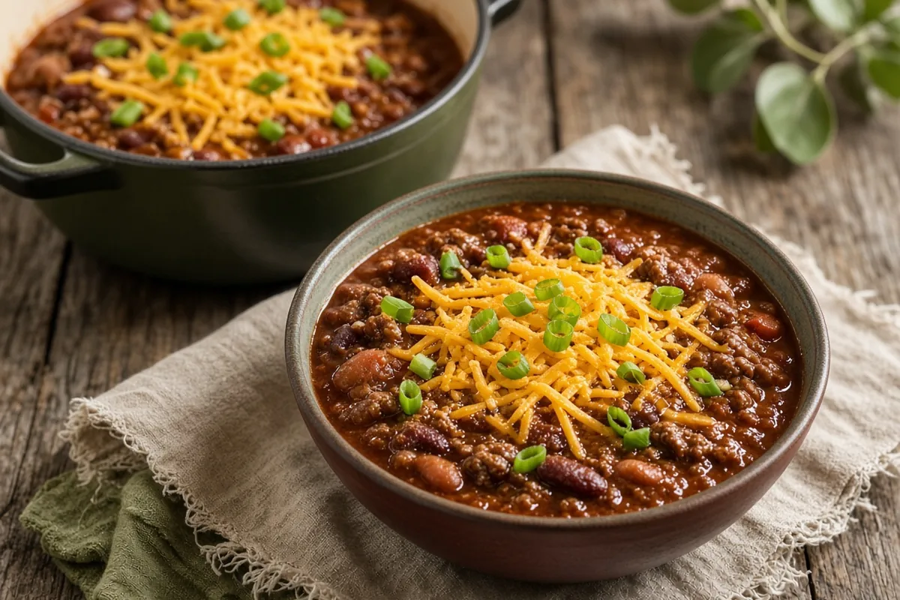

Simple, Perfect Chili
Ground beef chili simmered an hour with chili powder, cumin, and oregano, thickened with masa harina, and finished with kidney and pinto beans.

Adapted from Food Network (Ree Drummond)
6 servings
By
Yield: 6 to 8 servings
Prep:
Cook:
Total:
Difficulty: Easy
Ingredients
- 2 lb ground beef
- 2 cloves garlic, chopped
- 1 (8-oz) can tomato sauce
- 2 Tbsp chili powder
- 1 tsp ground cumin
- 1 tsp ground oregano
- 1 tsp salt
- 1/4 tsp cayenne pepper
- 1/4 cup masa harina
- 1 (15-oz) can kidney beans, drained and rinsed
- 1 (15-oz) can pinto beans, drained and rinsed
- Shredded cheddar, chopped onions, tortilla chips, and lime wedges, for serving
Instructions
- Put the ground beef and garlic in a large pot and cook over medium heat until browned, about 10 minutes. Drain off the extra fat.
- Stir in the tomato sauce, chili powder, cumin, oregano, salt, and cayenne. Cover, turn the heat to low, and simmer 1 hour, stirring now and then. Add water a little at a time if it gets dry.
- Stir the masa harina with 1/2 cup water to make a paste and stir it into the chili. Taste and adjust the seasoning; add more masa paste or water to get the thickness you like.
- Add the kidney beans and pinto beans and simmer 10 minutes.
- Serve with cheddar, onions, tortilla chips, and lime wedges.
Notes: An 80/20 beef has the most flavor; drain only some of the fat if you like it rich. Spoon it over Chili Cheese Dogs for game day.